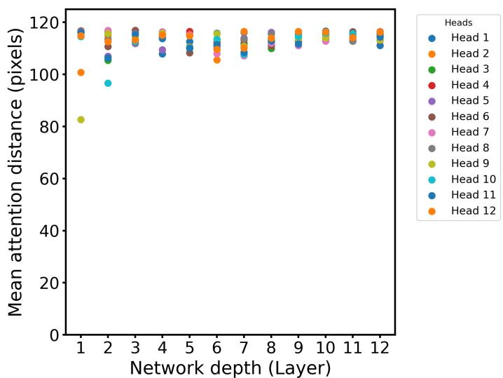

arXiv replacement · ICPR 2026 · MAE analysis · P3 · 2026-06-24
Robust Representation Learning in Masked：MAE/MIM 仍是视觉 SSL 基线，理解其 robustness 和 layer-wise representation 对后续方法有参考价值
从表征几何和注意力行为解释 MAE 为什么在 blur/occlusion 等 degradation 下仍有较强分类鲁棒性。
编号2602.03531
优先级P3
类别arXiv replacement · ICPR 2026 · MAE analysis
会议arXiv replacement · ICPR 2026 · MAE analysis
方法分析 MAE pretraining/fine-tuning 后 token embeddings 的层级变化，定义 clean/perturbed embedding directional alignment 和 active feature retention 等 robustness indicators。
来源arXiv / OpenReview
先说结论。MAE/MIM 仍是视觉 SSL 基线，理解其 robustness 和 layer-wise representation 对后续方法有参考价值。 从表征几何和注意力行为解释 MAE 为什么在 blur/occlusion 等 degradation 下仍有较强分类鲁棒性。


核心问题
MAE/MIM 仍是视觉 SSL 基线，理解其 robustness 和 layer-wise representation 对后续方法有参考价值。
方法拆解
分析 MAE pretraining/fine-tuning 后 token embeddings 的层级变化，定义 clean/perturbed embedding directional alignment 和 active feature retention 等 robustness indicators。
主要贡献
从表征几何和注意力行为解释 MAE 为什么在 blur/occlusion 等 degradation 下仍有较强分类鲁棒性。
实验看点
摘要称 MAE latent space 随深度逐步 class-aware separable，并比普通 ViT 更早、更持久地形成 global attention。
局限与读法
这是 replacement/status update，不是新首发；实验重心偏分类鲁棒性，未覆盖大规模自监督预训练新机制。